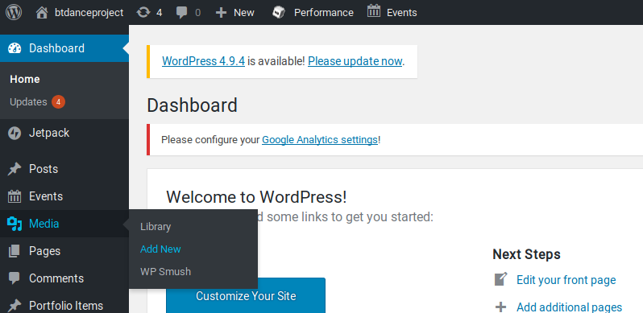
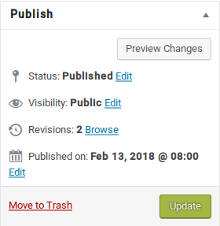
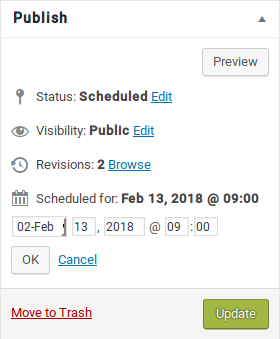
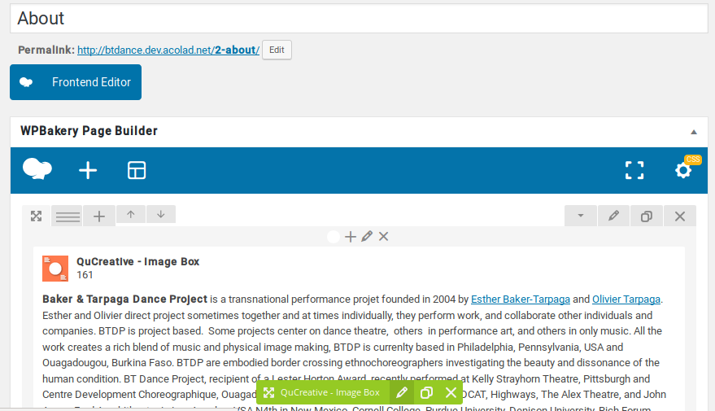
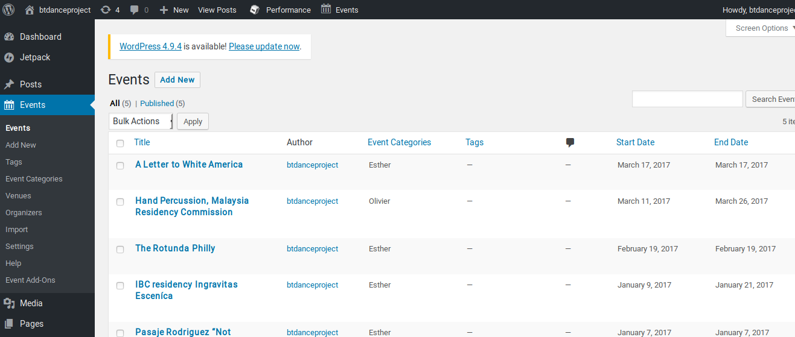
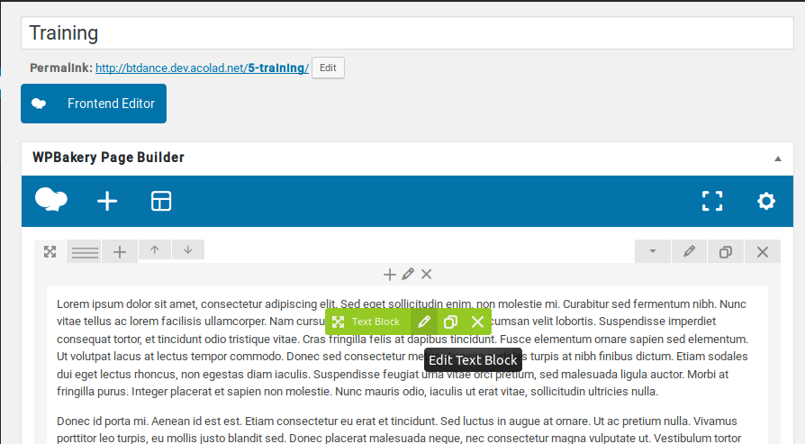
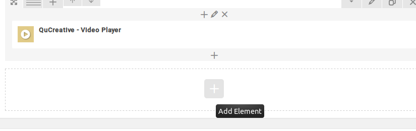
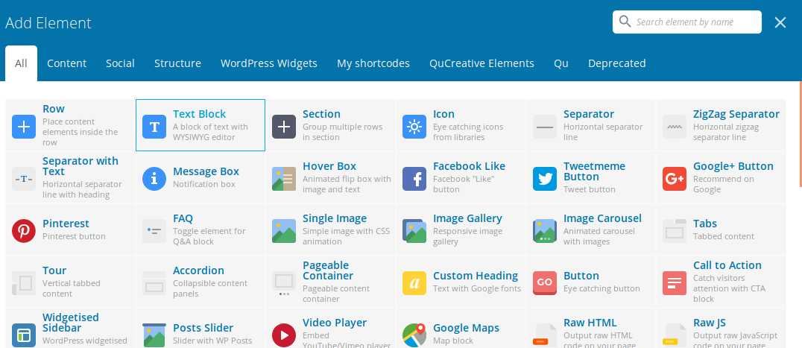
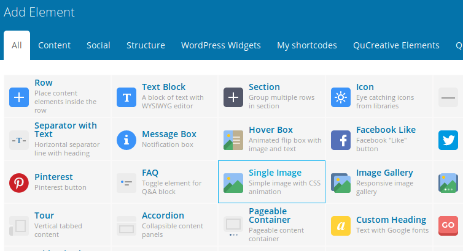
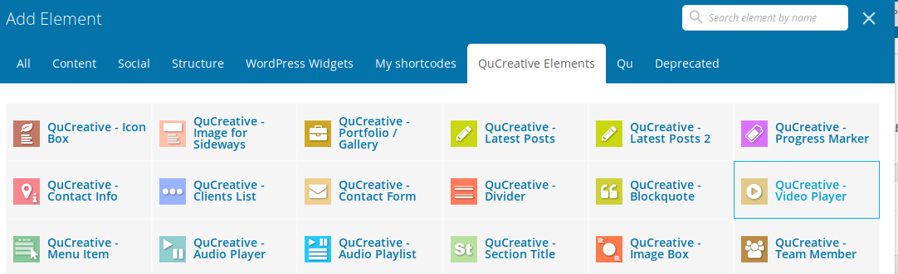

Introduction
To modify anything, you first need to be logged in. In order to do so go to btdanceproject.com/wp-admin
When modifying things like a page, a post, a portfolio item, you'll be able to either preview or update it. We advice to always preview it before publishing, because you can always leave the page without saving when you don't want to keep your changes. When you update it, it's saved and live.
To add pictures and movies : it's necessary to upload them. In the dashboard, select "Medias" and "Add news". In a second time, click on "Select files" and select your medias on your pc and "open". The file will load automatically. Home :
Slider : You can change the images.
Breaking news : You can change the text and if there's a button with a link or not.
Performance Works: Automatically display the most recent project.
to make a project the most recent you have to change the date of the project (portfolio item) by editing his date on the right window named 'Publish'.
click on edit then ok then update.


Funding support: Is set.
Modifying The Slider
First, you need to be on your Home page and logged in. In the Wordpress command bar, go in Slider Revolution -> Home Slider.

You land on a page where these are your slides :

Click on the picture of the slide you want to modify.
In the menu under it you have your main image :

Click on "Media library" and either select your picture that's in the wordpress library or upload files.
You need to save for each slide you modify, the button is in the top right corner.
Home: Add news
First, you need to be on your Home page and logged in. In the Wordpress command bar, go in +Edit page. In the WPBakery Page
Builder this are your news :

Click on the edit button on the one you want to modify and change it's content.
If you want to add or delete a button :
A button needs three fields : a Read More text, Read More Link, and a button style. Simply fill them or empty them if you
want or not a button.
The Read more Text is always "READ MORE" and the button style is always : " {"style":"style-hallowred","padding":"padding-small","rounded":""}
".
About
To modify either the text of the picture, on the about page click on + Edit page. In WPBakery Page Builder, Edit the block "QuCreative - Image Box" and modify the infos. You can add more pictures ( the green + ), or the delete the already existing picture to replace it(the red arrow on the picture) You can modify the text, then save.
To add new collaborators, simply modify the text block under the section title that you want
Project:
The idea is to have current and past projects. They don't go in past projects automatically, you have to choose that manually by checking a box, as you'll see down further.To add a portfolio item you need to click 'Add New'

* On the loaded page in "Add New Post" ==> Enter the title you want (This one won't be display on the front page).
Then in the WP Bakery Page Builder
!! You just have to change on the GREEN blocks NOT THE OTHERS !! by clicking on the pencil
Every time you have the button 'Save changes' just do it ;-)

Take attention of block existing but not visible.
You have to slide your mouse to see them


- Title
- * Change the Title by 'Text Block'
- QuCreative - Video Player
- * add ID's number of your Vimeo page after : https://vimeo.com/ (>ex : https://vimeo.com/183772483)
- * Delete the brown Cover
- * Add the image Cover you want by clicking on 'the Add Image'

- QUCreative - Image Slider
- * Delete the grey Cover
- * Add every image you want by clicking on 'the Add Image'
- QuCreative - Section Title : FOR EACH Section Title DO THE SAME
- * Scroll to : First Line and then change the Title if you want
- Under 'Empty Space' search and Edit 'Text Block' FOR EACH Text Block DO THE SAME
- Write the text of this block
From Top to Bottom and Left to Right
When your text is done, just go to the right of the window and you'll see :
Portfolio Categories

- Where to select
- * If You are working together on a New CURRENT Project : 'All Projects'
- * If Esther is working on a New CURRENT Project : 'All Projects ==> Esther'
- * If Olivier is working on a New CURRENT Project : 'All Projects ==> Olivier'
- * If You are working together on a PAST Project : 'Past Projects'
- * If Esther is working on a PAST Project : 'Past Projects ==> Esther'
- * If Olivier is working on a PAST Project : 'Past Projects ==> Olivier'
Featured Image
Right under the Portfolio categories, you have to choose the featured image, that'll be displayed as a miniature in the portfolio
Don't FORGET to UPDATE your page to save it !! by clicking just above Portfolio Categorie

Calendar :
Here, past events go automatically in the archives.
Add a new events
In the dashboard, go to event tab. You land on a page with all your events.
To add a new event, click on "Add New". This page allows you to create your event.
Enter the title of your event in the first input field. In the one right after, you can either add the event's description
or leave it empty. The next fields allows to add details :
Choose the time.
In location choose the place and then uncheck both checkboxes.
In organizer choose either existing ones or add a new.
Event website and Event Cost: optionnal
Then you can preview and publish.
For edit or delete events
In the main Events page, hover on the one you want to modify, and click "Edit"
Training
When logged in and on you Training page, click +Edit page. In the WPBakery Page Builder hover on the text to edit it. Modify directly the text. Save your changes
To modify the video, it's the same as the text.
To add or delete any content
To add a block (text, image, or video), Click on the " + " at the bottom of the WPBakery Page Builder and add element. Select either "Text block", "Single image" or "QuCreative - Video Player". See images below:
   To delete an element, click on the cross in the top right corner of the element. Be carefullto not delete the whole block, just the element!
Press: Add a new excerpt
First, you need to be on your Press page and logged in. In the Wordpress command bar, go in +Edit Page.
You land on a page where all the "QuCreative - Call to action" are your excerpts.The idea is to duplicate one of the other excerpts and modify its text. So you can hover onto one to access it's own menu, and duplicate it.

You can drag and drop it if you want you move it, but make sure to respect the same structure. It's safer not to move them, and so to duplicate one just below the place you want to add a new one.
Then on the one you want to modify, you can click it's edit button and modify the title, content, and Read More Link fields as the previous one. Then save your item, preview your page, and save it.
Page Contact : Change the E-mail address
Edit the contact page, and WPBakery edit the contact form. You can then modify the email address